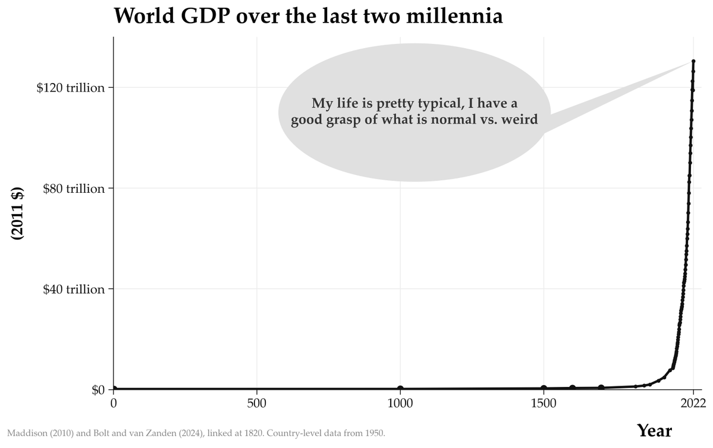
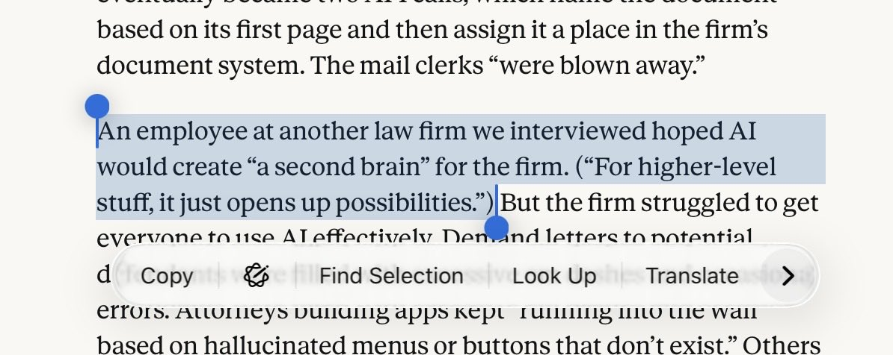
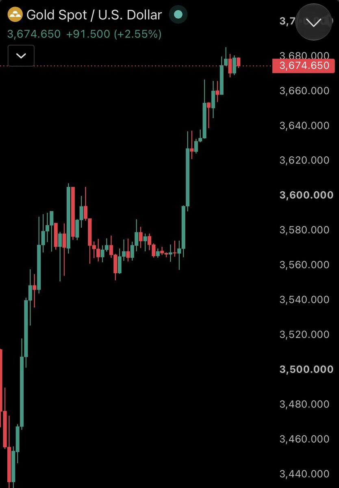
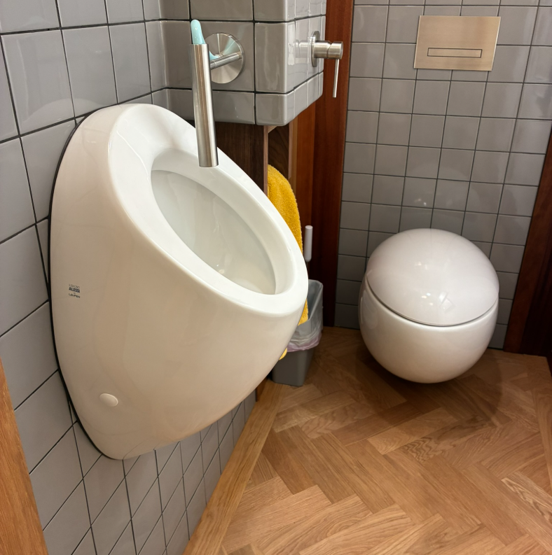

Dal prodotto scalare a quantistica e relatività (verificate in Lean), Mollick chiede tutor per tutti, l'oro torna sopra i 3.600 dollari e Nvidia incassa 115,8 miliardi in tre mesi. E un orinatoio diventa lavandino
Brief di venerdì 27 novembre 2026 · lista X «Best» · 132 post da 35 account, dalle 13:31 del 26/11 alle 13:22 del 27/11 (ora di Roma)
🦃 Ieri in America era Thanksgiving, e la lista «Best» ha passato la giornata a ringraziare: Sam Altman per la famiglia, Ray Dalio per una giornata «intenzionalmente pigra», Morgan Housel per un fatto che di solito dimentichiamo, cioè che siamo circa 10 volte più ricchi dei nostri trisnonni, che a loro volta erano circa 2 volte più ricchi di Gesù di Nazareth. Nel frattempo le macchine non hanno fatto festa: dimostrazioni pubblicate su GitHub come fossero commit, mercati che rimbalzano, robot promessi in cucina entro 18 mesi.

Bryan Johnson la mette così: questa settimana il progresso della matematica ha superato il «metabolismo» umano della conoscenza, e OpenAI e Anthropic ormai spingono le dimostrazioni direttamente su GitHub, «perché i comunicati stampa sono così 21 novembre». Emad Mostaque ci mette la ciliegina del giorno del Ringraziamento: tra tante dimostrazioni complicate, una elegante, con un solo assioma, il prodotto scalare, e un solo metodo, quello assiomatico. In quattro pagine ne discendono gli assiomi della meccanica quantistica, della relatività ristretta «e altro», il tutto verificato in Lean e pubblicato su GitHub. Mostaque ringrazia i team di OpenAI e Google perché GPT 6.2 Astra e Gemini Neon hanno aiutato a finire e formalizzare la dimostrazione negli ultimi giorni, e promette altro su «quanta parte della fisica è forzata: eravamo solo scarsi in matematica». Salim Ismail si congratula, Sam Rodriques avverte che se questa sembra AGI, conviene allacciare le cinture.
Il bersaglio successivo è la gravità. Ejaaz riassume: un fisico di OpenAI ha pubblicato un tentativo di collegare la gravità dell'infinitamente piccolo a quella dei pianeti, dopo 400 milioni di token bruciati da GPT 6 Astra, con l'avvertenza onesta che potrebbe non portare a nulla. Johnson lo legge come un fisico e qualche migliaio di dollari di calcolo contro un problema vecchio di cento anni, unificare relatività generale e meccanica quantistica. Sam Altman ringrazia invece Ven, tra i primi a credere che si potessero attaccare i problemi del millennio con i modelli di allora: essere brillanti è comune, avere anche «la fiducia ben riposta e il coraggio» di insistere su ciò che gli altri ritengono impossibile è raro. Un anno fa parlavamo di GPT-5 Pro e dei problemi FrontierMath, con la catena matematica → fisica → chimica → biologia (♾️ ff.135.3 Siamo nella singolarità?): il secondo anello sembra già in movimento. Paul Graham chiude la questione filosofica in una riga: che le AI pensino «davvero» o no, nelle previsioni conviene assumere di sì, perché gli effetti saranno gli stessi. E Taleb usa l'AI per un regolamento di conti: 13.000 menzioni su Google Scholar di probabilità negative in fisica e finanza, Feynman e Gell-Mann compresi, contro gli accademici che negavano l'esistenza del concetto.
x.com/EMostaque/status/2126045673581957242
Ethan Mollick scrive il thread più condiviso della giornata sull'educazione (oltre 46.000 visualizzazioni): oggi possiamo offrire a costo quasi nullo l'equivalente di un ottimo aiuto umano personalizzato, in qualsiasi lingua, a chiunque abbia un cellulare, e problemi «maligni» di istruzione, sanità e sviluppo potrebbero diventare trattabili. Racconta di aver passato anni su alfabetizzazione finanziaria ed educazione cercando surrogati di ciò che serviva davvero, una persona preparata accanto a ogni studente: l'aiuto umano non è mai scalato. Ora sì: il suo gruppo a Wharton ha pubblicato un progetto open source in cui agenti AI aiutano gli insegnanti a costruire simulazioni didattiche, che prima costavano moltissimo. E modelli di livello GPT-4 girano su uno smartphone, eppure di grandi progetti non profit se ne vedono pochi: l'ambizione è lasciata ai laboratori e alle startup. Greg Brockman, intanto, rilancia GPT-6.2 usato per lezioni interattive di storia.
Il contrappunto arriva da Patrick Hsu: ha incontrato la biologia in laboratorio, tra cellule, topi e microscopi, e se l'avesse imparata prima in aula non sarebbe mai diventato ricercatore. Patrick Collison, in una clip di a16z dal podcast con Dwarkesh del 2024, dà ai ventenni lo stesso consiglio: andare dove gli standard sono più alti e farne esperienza di persona, perché chi lavora accanto all'eccellenza capisce «cosa sia davvero il meglio». Il tutor in tasca può insegnare, il laboratorio ti contagia: lo dicevamo già quando ci chiedevamo se i curriculum scolastici non fossero ormai passato (👨🏫 ff.78.1 Scuola di vita?). Harari suggerisce come prepararsi a un'AI di cui non conosciamo la traiettoria: puntare sull'adattabilità. E Tiago Forte nota con soddisfazione che il suo «second brain» compare per la prima volta in una pubblicazione ufficiale di Anthropic, «Working with AI».

Dopo il crollo raccontato ieri, l'oro rimbalza: nella notte torna sopra i 3.600 dollari l'oncia, con l'argento a +5%, e in mattinata l'oro guadagna oltre il 4% e l'argento il 10%. I futures sull'S&P 500 superano quota 7.300 per la prima volta dal 19 novembre, +6% dal minimo di venerdì, ma la calma è apparente: il Nasdaq 100 ha avuto un'escursione media intraday del 3,8% negli ultimi cinque giorni, la più alta da aprile 2025. Chi scommette lo fa con la leva: l'ETF 3x sui semiconduttori SOXL ha raccolto 1,9 miliardi di dollari in una settimana, 1,7 nel solo lunedì. Chi si protegge compra assicurazioni: il volume dei CDS sul credito societario americano è a un record di 9.600 miliardi nel 2026, già sopra i 9.000 dell'intero 2025, con gli investitori che si coprono dal rischio del debito legato all'AI.
Al centro c'è sempre Nvidia. Peter Diamandis ricorda che ha appena dichiarato 115,8 miliardi di ricavi trimestrali, +103% in un anno, il 93% dai data center: tre mesi di fatturato che superano il PIL annuo della maggior parte dei paesi. Un anno fa i miliardi erano 57 e noi provavamo a dare un senso a quei numeri, avvertendo che valore di mercato e PIL non si confrontano (🍫 ff.139.1 Svizzero? No, NVIDIA). Holger Zschäpitz rilancia l'ex gestore Stefan Heieck, per cui il titolo a 149 dollari ne vale 102, il 32% in meno. Il resto del quadro: il dollaro +7% in nove mesi, la corsa migliore da novembre 2022, l'inflazione dei servizi alle imprese in Giappone al 4,2%, il massimo dal 1990, e in Germania 3,025 milioni di disoccupati, il dato più alto da marzo 2011, mentre SAP valuta almeno 10.000 tagli nel mondo per puntare sull'AI. Anthony Pompliano trova la frase giusta per il fondo di Leopold Aschenbrenner, -65% nel terzo trimestre ma ancora +88% da inizio anno: «non è mai così brutto come sembra, né così bello».

Il regalo di ieri, un'azione SpaceX per ogni bambino, diventa una promessa: Musk donerà un'altra azione SpaceX a tutti i bambini americani, ogni anno. Emad Mostaque lo chiama «universal basic assets», fatto da solo, Bill Gurley invita a registrare il conto del proprio figlio. Pompliano ricorda che i nostri problemi quotidiani sono piccoli fastidi che gran parte del mondo sognerebbe di avere, ed Erik Torenberg cita: più diventi un intenditore di gratitudine, meno sei vittima di risentimento, depressione e disperazione. Il post più visto della giornata, però, è di Sam Altman (oltre 1,2 milioni di visualizzazioni): la famiglia è la cosa migliore che gli sia mai capitata, e le due frasi che tutti gli dicevano prima di avere figli, «è meglio di quanto si possa spiegare» e «passa in fretta», sono entrambe vere. Aggiunge che una serata tranquilla con i figli, anche a fare cose banali, è tra le rare cose che non stancano alla centesima volta.
Ben Horowitz, in una clip di a16z, risponde a chi chiede se l'AI sia buona o cattiva con Andy Grove: chiedersi se il microprocessore sia buono o cattivo è come chiederlo dell'acciaio. «È. Sta a noi renderlo buono». E aggiunge: «Non si può mettere fuori legge la matematica». Intanto Diamandis riporta che per Musk i robot umanoidi potrebbero lavare i piatti nelle nostre case entro 12-18 mesi, e chiede se passeremmo a un servizio telefonico Starlink (lui sì, «in un nanosecondo»), pur convinto che AT&T e Verizon non spariranno. Dei robot in casa parlavamo già con Figure e Physical Intelligence (🥧 ff.129.2 Pi-greco, FigureAI e 1 ora “logistica”?). L'acciaio, però, si piega: secondo Reuters è stata violata Cloud One, la principale piattaforma cloud dell'aviazione americana, con possibili rischi per dati tattici, del personale e logistici. Ejaaz, dal canto suo, dà per finiti tutti i laboratori cinesi tranne DeepSeek: senza la distillazione dai modelli americani perderebbero 9-12 mesi.
David Sinclair passa il Ringraziamento a rilanciare JoinLifespan: per chi ha tutto, il tempo è il regalo più prezioso, il digiuno tiene in funzione l'autofagia, l'impianto di riciclo di ogni cellula, e fattori di ringiovanimento dalle cellule staminali pluripotenti un giorno cureranno l'invecchiamento. Segnala anche che la Mayo Clinic sta testando la tirzepatide contro le vampate di calore. Bryan Johnson collega i due mondi del brief: se l'AI sta fossilizzando le nostre ipotesi sulla velocità del progresso, cambia anche ciò che pensiamo della morte?
Paul Graham racconta di amici che, in ristrutturazione, non trovavano un lavandino delle proporzioni giuste e hanno montato un orinatoio, con l'unico inconveniente di dover avvisare gli ospiti di non farci pipì (oltre 176.000 visualizzazioni). Duchamp approverebbe, e anche noi, che di orinatoi e AI abbiamo già scritto (🚽 ff.146.1 Urinali e AI). Taleb confessa invece la sua gaffe accademica più divertente: doveva insegnare i «difetti dei modelli di probabilità in finanza», ma col direttore di dipartimento francese «defect» divenne «default», e il corso uscì come «Modellare la probabilità di default». Pieno di iscritti, e lui costretto a studiarsi i credit default swap. Gli stessi CDS che quest'anno hanno toccato 9.600 miliardi di volumi.

x.com/emollick/status/2126142028060795261